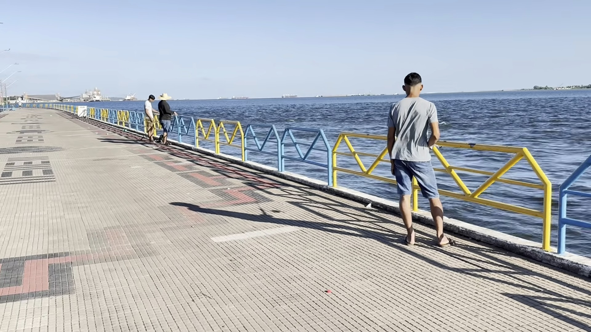

Pular para o conteúdo
Site
Revista
Destinos
Central
Revista
Turismo Aqui
Em destaque
Mais matérias

Orla de Santarém
·
Turismo Aqui, 1:33
Em destaque
Carregando as matérias…
Ative o JavaScript para ler as matérias.
Mais da revista
Revista Turismo Aqui
×